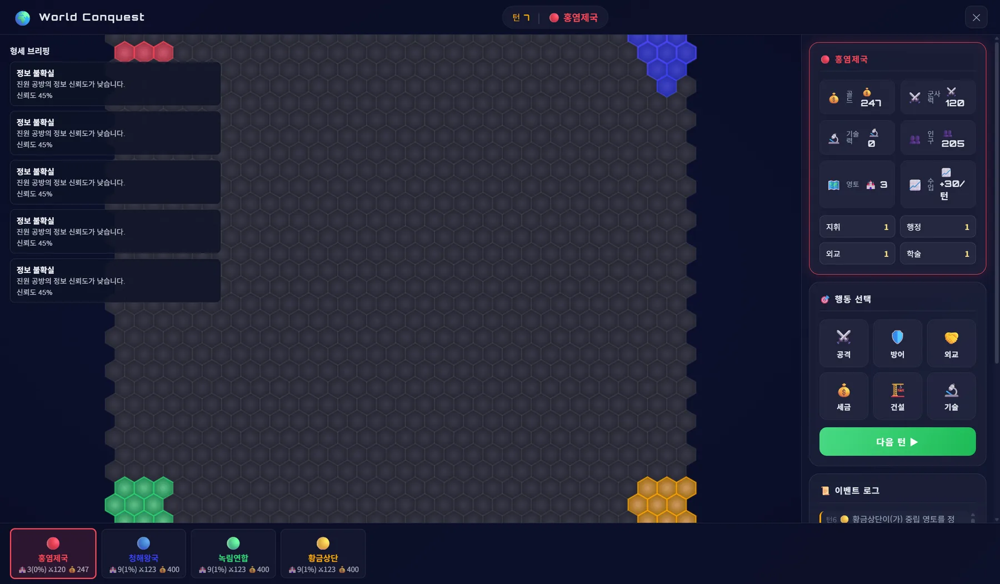

Prepared reversal
Working title · Playable systems prototype
Shape the war
before the battle begins.
지형을 읽고, 병력을 배치하고, 정보를 의심하고, 때를 선택하십시오. Strategy Ground는 몇 번의 큰 판단이 전쟁의 서사를 만드는 턴제 전략 게임입니다.
지금 브라우저에서 바로 실행되는 개발 빌드입니다. 완성된 데모가 아니라, 검증 중인 전쟁 시스템을 그대로 봅니다.
Turn-based war strategy
Fictional East Asia-inspired world
High complexity, low micromanagement
Running today
Not a mockup.
It runs in your browser.
아래는 렌더링한 이미지가 아니라 지금 작동하는 개발 빌드입니다. 지형, 세력, 자원, 정보, 그리고 행동 선택이 이미 하나의 턴제 루프로 돌아갑니다.

The idea
전략의 깊이는
명령의 개수가 아닙니다.
기존의 긴 전쟁 게임은 영토가 커질수록 더 많은 조작을 요구합니다. 하지만 기억에 남는 순간은 반복 업무가 아니라, 판을 뒤집은 한 번의 판단입니다.
Strategy Ground는 복잡성을 제거하지 않습니다. 지형, 보급, 병력, 정보, 요새와 타이밍이 서로 영향을 주도록 남겨둡니다. 대신 플레이어가 직접 처리해야 하는 일을 몇 개의 큰 선택으로 압축합니다.
“적게 조작하고, 더 많이 책임진다.”
Less of this
늘어난 영토만큼 반복되는 행정과 소탕
More of this
몇 턴에 걸쳐 설계한 작전이 만든 결정적 결과
A playable explanation
One operation.
Four connected judgments.
Strategy Ground가 어떤 판단의 연결을 게임의 핵심으로 삼는지, 지도 위에서 한 단계씩 짚어 보여주는 인터랙티브 설명입니다.
Terrain judgment
Read the ground.
강을 건너는 길은 넓지만, 병력이 전개될 수 있는 관문은 하나뿐입니다. 적의 숫자보다 먼저 싸움이 벌어질 조건을 읽습니다.
- Decision
- 관문을 지킬 것인가, 적을 통과시킬 것인가
- Consequence
- 다음 턴의 배치 가능 지역이 달라집니다.
Emergent history
No reenactments.
History-like consequences.
게임이 역사적 승리를 이벤트로 지급하지 않습니다. 같은 지형과 병력도 플레이어가 무엇을 준비하고 언제 결전을 선택했는지에 따라 전혀 다른 기록을 만듭니다.
불리한 병력으로
좁은 관문 · 숨긴 예비대 · 늦춘 결전Catastrophic commitment
잘못 고른 결전으로
나라의 위기를 열다
노출된 평원 · 끊긴 퇴로 · 소멸한 야전군
Product principles
Complexity stays.
Busywork leaves.
단순한 게임을 만드는 것이 아니라, 복잡한 전쟁을 더 읽기 좋은 선택으로 바꾸는 것이 목표입니다.
- Map-first judgment
- 명령창보다 먼저 지도에서 상황을 읽습니다.
- Legible uncertainty
- 정보 부족은 무작위 방해가 아니라 추론할 여지를 만듭니다.
- Persistent consequence
- 병력, 길, 요새와 피로의 변화가 다음 판단까지 남습니다.
- Compressed arc
- 한 판의 성장과 전쟁, 위기를 짧고 밀도 높은 호흡으로 설계합니다.
- Player-authored climax
- 결전은 이벤트가 아니라 누적된 선택의 결과로 발생합니다.
Built in the open
The systems come first.
The surface follows.
화려한 트레일러보다 먼저, 전쟁이 실제로 어떻게 결판나는지를 만듭니다. 지형·피로·보급·정보·타이밍이 서로를 밀어내는 모델을 코드와 테스트로 검증하고, 그 위에 게임을 올립니다.
- 437
- 통과하는 자동화 테스트. 전투 산술과 작전 모델을 회귀로 지킵니다.
- 38
- 기록된 설계 결정(ADR). 되돌릴 수 없는 규칙을 명문화합니다.
- 11
- 봉인된 기능 설계 문서. 지형, 전투 공식, 정보 안개, 작전 카탈로그.
- 9
- 검증 중인 전쟁 모델 모듈. 피로, 이동·보급, 교전, 병력 분할, 정보.
이 숫자들은 마케팅 문구가 아니라 저장소에 있는 사실입니다. 슬라이스2 전쟁 모델은 지금 테스트로 검증되고 있으며, 다음 증거 목표는 이것을 플레이 가능한 한 번의 전쟁으로 배선하는 것입니다.
Development, without theatre
Built in public.
Promised in layers.
지금 작동하는 것과 앞으로 만들 것을 같은 말로 포장하지 않습니다. 출시 날짜 대신, 제품의 증거가 어떤 순서로 깊어지는지 공개합니다.
-
NowCurrent proof
Systems prototype
가상의 지도, 지형 기반 전투, 상황 판단과 자원 루프가 브라우저에서 지금 돌아갑니다. 위에서 직접 실행해 볼 수 있습니다.
-
NextProof target
One complete war
준비, 작전, 결전, 정산이 하나의 인과관계로 읽히는 전쟁 단위를 검증합니다.
-
VisionProduct direction
Every match, a war story
PvP와 Steam 출시를 향해, 매 판 다른 전쟁사가 남는 완성형 제품으로 확장합니다.
Current state
In active development공개된 브라우저 빌드는 지금까지 배선된 시스템을 직접 확인할 수 있는 개발 버전입니다. 최종 콘텐츠와 아트는 이 위에 올라갑니다.
Inspect the Current Build